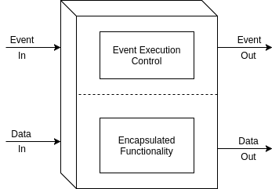
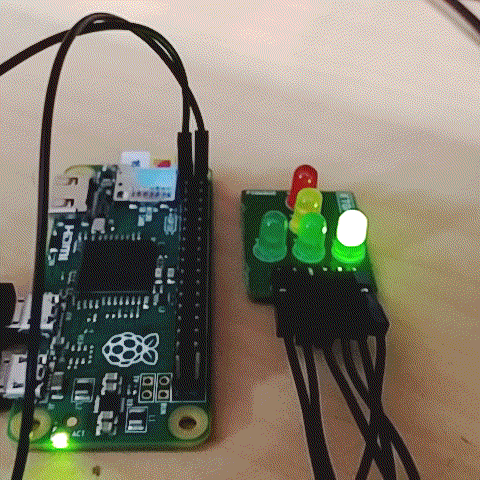

Archived note, written in 2017, while I was a research assistant at FOSSEE, IIT Bombay. Tools and versions have moved on since.
Function Blocks
Introduction to Function blocks and H/W interfaces.
Function blocks are reusable implementation of a specific function or component in an automation system similar to a class in OOP. .The following figure represents a function block


A function block in IEC61499 can be an active or a passive element. A passive element waits for a event to trigger its functionality while an active element is time dependent.The event and data flow in a function block is shown below
To learn more about Function Blocks, Application Model and System Model in IEC61499 please watch this video
Blinking an LED
We will now do a sample application to blink an LED connected to a GPIO in Raspberry Pi. The plan is to build an application in 4DIAC and then download it to Forte RTE running on RPi. To proceed further we need the following.
- PC running 4DIAC
- Raspberry Pi with Forte
- LED
- 220E Resistor (or equivalent)
- Breadboard
- Some wires/Jumpers
Please use Firefox/Chromium/Chrome before proceeding. WebM ,an open media container,is not natively supported in internet explorer/Safari.The browsers will need third party plugins to play the same.
Building Application
Quick Tip: Move the mouse over to event or data I/O to more about each Function block inputs and outputs.
Note: While creating applications we are not usually aware of the target PLC/Hardware.The parameters are assigned after defining system configuration.The approach helps us run same application on different PLC's.
The target machine(Embedded resource) is Raspberry Pi and is connected via ethernet (RJ45/WiFi).Make sure that a local IP address is assigned to Pi for downloading application.Global IP addresses will only work with port forwarding/DDNS.
- DT is assigned a value of 1000ms.E_CYCLE would hence generate events for every 1000ms/1s.
- Event input qualifier (QI) is made true.
- PARAMS in QX block take the Output Pin (GPIO) Number.In this case its the GPIO of Raspberry Pi.Forte uses SysFS which use BCM Pin Mapping. You can learn about the Pinout from this image or using the command in RPi.
gpio readall
Make sure that the work is saved !!
Downloading Application to RPi

More details on Secure Shell (SSH) can be found in my previous RPi tutorial


Note: Clean device in Deployment perspective to deploy a new application.
Assignments for Practice.
- Change the blink rate.
- Change duty cycle of the blink
- Multiple LED configuration.